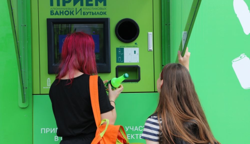
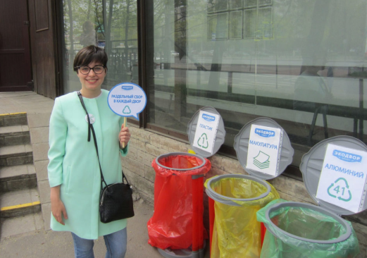

ABOUT US
Likewise, the scope and location of staff training allows one to assess the importance of significant financial and administrative conditions. Thus, the constant quantitative growth and scope of our activity is an interesting experiment to verify the appropriate activation conditions. The task of the organization, in particular the new model of organizational activity, provides a wide range of (specialists).

